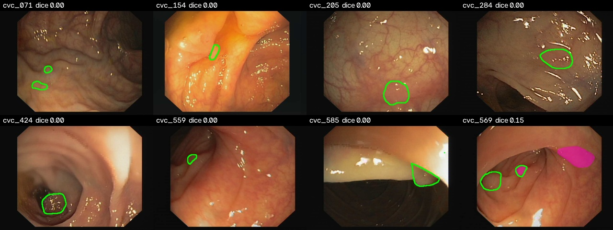
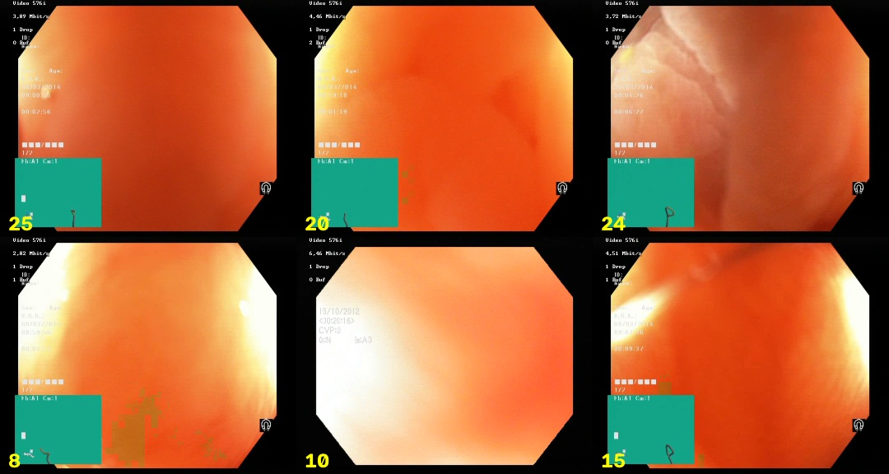

1. Introduction
This project implements a colonoscopy computer-aided detection (CADe) prototype that covers the whole pipeline: dataset indexing, a hand-written PyTorch training loop, evaluation at the image, sequence and video level, error analysis, frame-quality gating, temporal alarm logic, ONNX export and a latency benchmark.

Video: HyperKvasir [2], CC BY 4.0. Resized, with alarm border, track box and labels added.
| External test (CVC-ClinicDB, other hospital, never trained on) | Dice 0.853 [95 % CI 0.836–0.869], polyp-level sensitivity 90.6 % |
| Polyp-free colonoscopy video (14.6 min, 21 883 frames) | 6.2 false alarms / min, down from 30.6 before adding polyp-free training frames |
| Held-out polyp-free images | 1.4 % with a false positive, down from 41 % |
| Speed (Apple M1 Pro, MPS) | 22.6 ms per frame for the model; 27–32 FPS end to end including FFmpeg decode and encode |
The Dice score is not the main result. A model trained the standard way, on Kvasir-SEG alone, reaches the same Dice but raises an alarm about every two seconds on normal colon. Test sets in which every image contains a polyp cannot show this.
Core Features:
- U-Net and DeepLabV3+ (ImageNet ResNet-34 encoder) trained with a hand-written PyTorch loop, no trainer framework
- Polyp-free HyperKvasir training frames that cut false alarms on normal colon by 5×
- Frame-quality gate (blur, dark, over-exposed) computed over the mucosa only
- Deterministic ignore mask for the Olympus ScopeGuide box and everything outside the field of view
- Greedy IoU tracker that raises an alarm only after 3 consecutive frames
- Real-time FFmpeg video pipeline with annotated output and alarm-event CSV
- Leakage-safe evaluation: external CVC-ClinicDB test, per-sequence reporting, bootstrap 95 % CIs
- Error analysis by contrast, blur, size and polyp count, with failure galleries
- ONNX export (checked against PyTorch) and a multi-backend latency benchmark (PyTorch, ONNX Runtime, CoreML, TensorRT)
- 59 data-free, GPU-free unit tests and a GitHub Actions CI
2. Methodology / Approach
Every frame passes through a fixed sequence of stages. Segmentation produces a probability map; everything after it is deterministic post-processing that turns pixels into blobs, blobs into tracks and tracks into alarms.
2.1 System Architecture
FFmpeg decode ─► quality gate ─► U-Net (ResNet-34) ─► ignore mask ─► blobs ─► IoU tracker ─► alarm
(rgb24 pipe) blur / dark / 352×352 logits device UI + ≥0.1 % confirm after
over-exposed → original size outside FOV of frame 3 consecutive frames| Stage | What it does | Why |
|---|---|---|
| Quality gate | Variance of the Laplacian over the mucosa only, plus exposure checks | Red-outs (scope touching the wall) and motion blur produce confident false positives |
| Segmentation | segmentation_models_pytorch U-Net or DeepLabV3+ with an ImageNet ResNet-34 encoder. BCE + soft-Dice loss (Dice only on images that contain a polyp), AdamW, cosine LR |
The training loop is written out in train.py; no trainer framework |
| Ignore mask | Removes the Olympus ScopeGuide box and everything outside the circular field of view | The positives-only network fires on the teal UI box with p ≈ 1.0 (Section 10.8) |
| IoU tracker | Greedy IoU association; a track raises an alarm only after min_hits consecutive frames; confirmed tracks survive short gaps |
Removes single-frame flicker, at the cost of min_hits − 1 frames of latency |
2.2 Implementation Strategy
The code is a small installable package (src/polypseg/) with one module per stage and one YAML file per experiment (configs/). PyTorch and ONNX Runtime segmenters share one interface (inference.py), so every evaluation script and the video pipeline accept either a .pt checkpoint or an .onnx model. Each frame is segmented once and the probability map is reused for every threshold and every post-processing variant, so ablations and threshold sweeps compare exactly the same predictions. scripts/reproduce.sh regenerates every number in this README.
3. Mathematical Framework
3.1 Dice and IoU
Per-image overlap between the predicted mask $P$ and the ground truth $G$, computed at the original resolution and then averaged over images:
$$\text{Dice}(P, G) = \frac{2\,|P \cap G|}{|P| + |G|}, \quad \text{IoU}(P, G) = \frac{|P \cap G|}{|P \cup G|}$$
3.2 Loss Function
BCE on every pixel plus soft Dice averaged only over the images that contain a polyp ($\mathcal{B}^{+}$), with $p$ the predicted probabilities, $y$ the mask and $\varepsilon = 1$:
$$\mathcal{L} = \text{BCE}(p, y) + \frac{1}{|\mathcal{B}^{+}|} \sum_{i \in \mathcal{B}^{+}} \left(1 - \frac{2 \sum p_i y_i + \varepsilon}{\sum p_i + \sum y_i + \varepsilon}\right)$$
On an empty mask soft Dice reduces to $\varepsilon / (\sum p + \varepsilon)$, which is why it is excluded there (Section 10.8).
3.3 Model Selection Score
$$\text{score} = \tfrac{1}{2}\left(\overline{\text{Dice}}_{\text{polyp images}} + \text{share of polyp-free images left clean}\right)$$
3.4 Quality Gate
Sharpness is the variance of the Laplacian over the field of view $\Omega$, with overlays and specular highlights excluded:
$$B = \mathrm{Var}_{(x,y) \in \Omega}\left(\nabla^2 I(x, y)\right)$$
A frame is skipped when $B < 30$, mean brightness $< 40$ or $> 235$, or specular share $> 0.15$.
3.5 Tracking and Temporal Confirmation
Blobs are associated with tracks greedily by box IoU ($\geq 0.2$). A track is confirmed and raises an alarm after min_hits = 3 consecutive hits and survives up to max_misses = 5 missed frames once confirmed. Alarm latency is min_hits − 1 frames.
3.6 Detection and Alarm Metrics
A ground-truth polyp is detected if a predicted blob overlaps it with $\text{IoU} \geq 0.1$:
$$\text{Polyp-level sensitivity} = \frac{\text{detected GT polyps}}{\text{all GT polyps}}, \quad \text{FA/min} = \frac{\text{confirmed alarms on polyp-free video}}{\text{video minutes}}$$
3.7 Confidence Intervals
95 % CIs are percentile bootstrap over images: resample the per-image scores with replacement, recompute the mean, and take the 2.5th and 97.5th percentiles.
4. Dataset
4.1 Datasets
| Dataset | Use | Size | Notes |
|---|---|---|---|
| Kvasir-SEG | train / val | 1000 images, 880 / 120 | Vestre Viken (Norway). Every image contains a polyp |
| HyperKvasir labeled images | polyp-free training frames (empty masks) | 4 × 300 lower-GI images (BBPS 0-1, BBPS 2-3, cecum, retroflex rectum), 1056 train / 144 held out | Same hospital as Kvasir-SEG |
| CVC-ClinicDB | external test, never trained on | 612 frames, 29 sequences, 25 studies | Hospital Clinic Barcelona. Smaller polyps: median 6.8 % of the frame vs 11.4 % in Kvasir |
| HyperKvasir labeled videos | false alarms per minute | 13 videos, 14.6 min, 21 883 frames, labeled BBPS 2-3 + normal mucosa | No polyp expected |
| HyperKvasir labeled videos | qualitative demo | 5 polyps videos | No frame-level ground truth |
4.2 Leakage Controls
- CVC-ClinicDB frames from one sequence show the same polyp from slightly different angles. The official frame→sequence table (from the dataset README) is in
data.py, andgroup_splitnever puts one sequence on both sides of a split (tested). CVC is only a test set here, so it is also reported per sequence: its 612 frames are really 29 cases. - Kvasir-SEG and HyperKvasir ship no patient ids, so their train/val splits are per image. Near-duplicate frames from one procedure can land on both sides, which makes Kvasir-val optimistic. The external CVC test is the headline number for that reason.
- Kvasir-SEG, the HyperKvasir negatives and the HyperKvasir videos all come from the same hospital, and patient overlap between the negative training images and the false-alarm videos cannot be ruled out (Section 10.9).
- Checkpoints are selected on Kvasir/HyperKvasir validation only. CVC and the videos were never used to pick a checkpoint or a hyper-parameter.
4.3 Evaluation Metrics
metrics.py, all unit-tested:
- Pixel metrics are computed per image at the original resolution and then averaged. 95 % CIs are percentile bootstrap over images.
- Polyp-level sensitivity: a ground-truth polyp (connected component) counts as detected if a predicted blob overlaps it with IoU ≥ 0.1.
- False-positive blobs: predicted blobs (≥ 0.1 % of the frame) that match no polyp.
- False alarms per minute: confirmed tracker alarms on polyp-free video ÷ video minutes.
- Model selection: mean of (Dice on validation polyps, share of polyp-free validation images left clean). Mixing both into one Dice lets the 0/1 scores of empty images dominate.
5. Model
Three models, identical except for what they were trained on:
unet_r34: U-Net, Kvasir-SEG onlydeeplabv3p_r34: DeepLabV3+, Kvasir-SEG onlyunet_r34_neg: U-Net, Kvasir-SEG plus polyp-free frames (main model)
Main Model: runs/unet_r34_neg/best.pt (PyTorch) and runs/unet_r34_neg/best.onnx (ONNX)
Architecture: U-Net, ImageNet ResNet-34 encoder (segmentation_models_pytorch)
Input Size: 3 × 352 × 352
Loss: BCE + soft Dice on polyp images only
Optimizer: AdamW (lr 3e-4, weight decay 1e-4), cosine LR schedule
Training: up to 50 epochs, batch size 16, early-stopping patience 20, seed 42
| Model | Kvasir-val Dice | CVC Dice [95 % CI] | CVC polyp-level sens. | Polyp-free images with a false positive | FA / min (3 frames) |
|---|---|---|---|---|---|
unet_r34 |
0.916 | 0.854 [0.838–0.869] | 92.7 % | 41.0 % | 30.6 |
deeplabv3p_r34 |
0.912 | 0.851 [0.836–0.865] | 92.4 % | 77.1 % | 60.3 |
unet_r34_neg |
0.915 | 0.853 [0.836–0.869] | 90.6 % | 1.4 % | 6.2 |
Training logs are in runs/*.log, per-epoch histories in runs/<run>/history.csv and the train/val split in runs/<run>/split.json. Training on an M1 Pro (MPS) takes about 40 min without negatives and 75 min with them. CUDA is used automatically when available.
6. Requirements
requirements.txt
torch>=2.2
segmentation-models-pytorch>=0.3.4
albumentations>=2.0
opencv-python-headless>=4.9
tifffile>=2024.1
numpy>=1.26
pandas>=2.0
matplotlib>=3.8
pyyaml>=6.0
tqdm>=4.66
onnx>=1.16
onnxruntime>=1.18The same dependencies are declared in pyproject.toml; the dev extra adds pytest, ruff and onnxscript. The video pipeline also needs the ffmpeg binary on PATH.
7. Installation & Configuration
7.1 Environment Setup
# Clone the repository
git clone https://github.com/kemalkilicaslan/Real-Time-Colonoscopy-Polyp-Segmentation-System.git
cd Real-Time-Colonoscopy-Polyp-Segmentation-System
# Create an environment and install the package
uv venv -p 3.11 && source .venv/bin/activate # or python -m venv
pip install -e ".[dev]" # or: pip install -r requirements.txt7.2 Project Structure
Real-Time-Colonoscopy-Polyp-Segmentation-System/
├── .github/workflows/ci.yml # ruff + pytest on Python 3.10 and 3.12
├── configs/ # one YAML per experiment
├── scripts/ # data download, negative fetch, end-to-end reproduction
├── src/polypseg/
│ ├── data.py # dataset indexing, CVC sequence map, group split, negatives
│ ├── preprocess.py # I/O (incl. the TIFF fix), normalization, augmentation
│ ├── model.py, train.py # model factory, hand-written training loop
│ ├── inference.py # PyTorch / ONNX Runtime segmenters behind one interface
│ ├── metrics.py # pixel, polyp-level and video metrics, bootstrap CI
│ ├── evaluate.py # image-level evaluation → summary.json, per_image.csv
│ ├── error_analysis.py # attribute grouping and failure galleries
│ ├── quality.py # blur / exposure / specular quality gate
│ ├── overlays.py # device-UI and field-of-view masks
│ ├── tracking.py # IoU tracker with debounced alarms
│ ├── video.py # FFmpeg real-time pipeline and annotated output
│ ├── video_eval.py # temporal evaluation on CVC sequences
│ ├── false_alarms.py # false alarms per minute and pipeline ablation
│ ├── operating_point.py # threshold sweep: CVC sensitivity vs false alarms
│ └── export.py, benchmark.py # ONNX export and check, multi-backend latency
├── tests/ # pytest suite (no data needed)
├── data/raw/ # datasets (downloaded by scripts/, not tracked)
├── runs/ # checkpoints, training logs and histories
├── outputs/ # evaluation results, galleries, annotated videos
├── Real-Time-Colonoscopy-Polyp-Segmentation-*.gif / *.jpg # README figures
├── Dockerfile
├── .dockerignore
├── docker-compose.yml
├── .gitignore
├── Makefile
├── pyproject.toml
├── README.md
├── requirements.txt
└── LICENSE7.3 Required Files
- Datasets:
python scripts/download_data.py(Kvasir-SEG, CVC-ClinicDB, HyperKvasir videos) andpython scripts/fetch_negatives.py --per-class 300(polyp-free frames via HTTP range reads) populatedata/raw/. - Model:
runs/unet_r34_neg/best.pt, produced by training;best.onnxis produced bypolypseg.export.
7.4 Configuration Parameters
Each experiment is one YAML file in configs/ (unet_r34.yaml, deeplabv3p_r34.yaml, unet_r34_neg.yaml):
data:
kvasir_root: data/raw/Kvasir-SEG
cvc_root: data/raw/cvc/CVC-ClinicDB
negatives_root: data/raw/hyperkvasir-negatives # unet_r34_neg only
val_fraction: 0.12 # 880 train / 120 val
image_size: 352
model:
arch: Unet # any segmentation_models_pytorch architecture, e.g. DeepLabV3Plus
encoder: resnet34
encoder_weights: imagenet
train:
epochs: 50
batch_size: 16
lr: 3.0e-4
weight_decay: 1.0e-4
early_stopping_patience: 20 # cosine LR is still high early on; val (n=120) is noisy
eval:
threshold: 0.5
min_component_area_frac: 0.001 # ignore predicted blobs smaller than 0.1% of the frame
polyp_iou_threshold: 0.1 # a GT polyp counts as detected if a predicted blob overlaps it at IoU >= 0.18. Usage / How to Run
8.1 Full Reproduction
bash scripts/reproduce.sh # data → train → every table below8.2 Individual Steps
python scripts/download_data.py # Kvasir-SEG, CVC-ClinicDB, HyperKvasir videos
python scripts/fetch_negatives.py --per-class 300 # polyp-free frames via HTTP range reads
python -m polypseg.train --config configs/unet_r34_neg.yaml
python -m polypseg.evaluate --ckpt runs/unet_r34_neg/best.pt --dataset cvc # or kvasir-val, negatives-val
python -m polypseg.error_analysis --eval-dir outputs/unet_r34_neg/cvc
python -m polypseg.video_eval --ckpt runs/unet_r34_neg/best.pt
python -m polypseg.false_alarms --model runs/unet_r34_neg/best.pt --videos data/raw/hyperkvasir-videos/normal
python -m polypseg.operating_point --ckpt runs/unet_r34_neg/best.pt --videos data/raw/hyperkvasir-videos/normal
python -m polypseg.export --ckpt runs/unet_r34_neg/best.pt
python -m polypseg.benchmark --ckpt runs/unet_r34_neg/best.pt
python -m polypseg.video --model runs/unet_r34_neg/best.onnx --input video.avi --output out.mp48.3 Real-Time Video Pipeline Options
| Option | Default | Description |
|---|---|---|
--model |
required | .pt checkpoint or .onnx model |
--input / --output |
required / none | Input video; annotated MP4 (optional) |
--events |
none | CSV of alarm events (optional) |
--threshold |
0.5 | Probability threshold |
--min-hits |
3 | Consecutive frames before an alarm |
--max-misses |
5 | Missed frames a confirmed track survives |
--min-blur |
30 | Quality-gate sharpness threshold |
--no-quality / --no-overlay-mask |
off | Disable the quality gate / keep overlays and area outside FOV |
In the annotated video a red border flashes when an alarm is raised, a green box marks a confirmed track, and blurry frames are labeled SKIPPED.
8.4 Tests and CI
make install # pip install -e ".[dev]"
make test # pytest
make lint # ruff check src tests scripts
make reproduce # bash scripts/reproduce.shpytest runs 59 tests, none of which need data or a GPU. They cover:
- metrics on hand-computed cases and the leakage-safe split
- pre- and post-processing, including the TIFF regression
- the quality gate, overlay and field-of-view masks
- the tracker's debounce logic and the false-alarm replay
- the empty-mask loss regression
- PyTorch↔ONNX equivalence on a small model
GitHub Actions runs ruff and pytest on Python 3.10 and 3.12 with CPU-only PyTorch.
9. Docker Deployment
The system can be packaged and run in a container so that the code, its dependencies and the runtime environment stay consistent across machines.
Files
Dockerfile- builds the image (Python 3.11 + FFmpeg + CPU-only PyTorch + thepolypsegpackage)..dockerignore- keeps datasets, checkpoints and generated results out of the build context.docker-compose.yml- runs the container and mountsdata/,runs/andoutputs/for input/output.
Build and run
docker compose up --build
# or with the Docker CLI directly
docker build -t real-time-colonoscopy-polyp-segmentation-system:latest .
docker run --rm -v "$(pwd)/data":/app/data -v "$(pwd)/runs":/app/runs \
-v "$(pwd)/outputs":/app/outputs real-time-colonoscopy-polyp-segmentation-system:latestNotes
- The default command runs the real-time pipeline with
runs/unet_r34_neg/best.onnxon the HyperKvasir polyp videoc0c92730and writes the annotated MP4 and alarm-event CSV tooutputs/unet_r34_neg/videos/. - Any other step can be run by overriding the command, e.g.
docker compose run --rm colonoscopy-polyp-segmentation python -m polypseg.evaluate --ckpt runs/unet_r34_neg/best.pt --dataset cvcordocker compose run --rm colonoscopy-polyp-segmentation pytest. - The image uses CPU-only PyTorch; the latency figures in Section 10.6 were measured natively on Apple MPS and are not reachable inside the container.
10. Application / Results
Three models, identical except for what they were trained on (Section 5): unet_r34, deeplabv3p_r34 and unet_r34_neg (main model).
10.1 Segmentation, In-Domain and External
| Model | Kvasir-val Dice | CVC Dice [95 % CI] | CVC IoU | CVC sens. | CVC spec. | CVC polyp-level sens. | CVC FP blobs / img | Worst / median CVC sequence Dice |
|---|---|---|---|---|---|---|---|---|
unet_r34 |
0.916 | 0.854 [0.838–0.869] | 0.780 | 0.871 | 0.991 | 92.7 % | 0.051 | 0.43 / 0.90 |
deeplabv3p_r34 |
0.912 | 0.851 [0.836–0.865] | 0.773 | 0.873 | 0.989 | 92.4 % | 0.062 | 0.24 / 0.88 |
unet_r34_neg |
0.915 | 0.853 [0.836–0.869] | 0.783 | 0.856 | 0.993 | 90.6 % | 0.046 | 0.13 / 0.90 |
- Dice drops about 6 points from Kvasir to CVC: a different hospital, different scopes, 384×288 frames and smaller polyps.
- On segmentation, all three models fall within each other's confidence intervals. Adding polyp-free frames cost nothing on the mean.
- The hardest case did get worse. CVC sequence 10 is a flat, pale lesion that is barely distinguishable from the surrounding mucosa. The positives-only U-Net finds it; the model that learned what normal mucosa looks like calls it normal (Dice 0.43 → 0.13). Polyp-level sensitivity drops 2 points. 22 of the 29 sequences change by less than 0.02 Dice. This is the sensitivity/specificity trade-off, and Section 10.4 shows what the threshold can buy back.
10.2 Polyp-Free Images and Video: Why "Train on Kvasir-SEG" Is Not Enough
Every Kvasir-SEG image contains a polyp, so a model trained on it alone never sees a fold, the appendiceal orifice or a close-up of normal mucosa labeled "not a polyp". Kvasir and CVC cannot reveal the consequence, because all of their test images contain a polyp too.
Held-out polyp-free images (144 HyperKvasir frames):
| Model | Pixel specificity | Images with any false-positive blob |
|---|---|---|
unet_r34 |
0.980 | 41.0 % |
deeplabv3p_r34 |
0.964 | 77.1 % |
unet_r34_neg |
0.9997 | 1.4 % |
A pixel specificity of 0.98 looks good, but it is the wrong metric for a CADe alarm: at that level, 41 % of the polyp-free images still get a false-positive blob.
13 polyp-free colonoscopy videos (14.6 min, 25 FPS). Each row adds one pipeline stage; segmentation runs once and only the post-processing changes (false_alarms.py):
| Pipeline | unet_r34 FA / min |
deeplabv3p_r34 FA / min |
unet_r34_neg FA / min |
unet_r34_neg frames showing a false box |
|---|---|---|---|---|
| raw per-frame output | 245.1 | 380.3 | 52.7 | 5.2 % |
| + overlay & field-of-view mask | 244.4 | 380.3 | 52.7 | 5.2 % |
| + quality gate | 235.6 | 369.9 | 51.2 | 5.1 % |
| + temporal confirmation (3 frames) | 30.6 | 60.3 | 6.2 | 1.6 % |
| stricter confirmation (5 frames) | 16.1 | 32.8 | 2.8 | 0.8 % |
False Positives Before Adding Polyp-Free Frames:

Positives-only U-Net on polyp-free video: folds, close-ups and mucosal bulges segmented with p ≈ 0.9 to 1.0. A higher threshold would not help: 24 % of sampled frames still had a blob above p = 0.9.
Frames: HyperKvasir [2], CC BY 4.0. Predicted masks and probabilities added.
- Polyp-free training frames give a 5× reduction at the same pipeline setting (30.6 → 6.2). Temporal confirmation gives another ~8×, and the two effects add up.
- The overlay mask matters for the positives-only model (Section 10.8) and does nothing for the new one: the negative images contain the ScopeGuide box, so the network learned to ignore it. The mask stays as a deterministic safety layer.
- The quality gate removes 3.9 % of frames and a small share of alarms. It matters more in the polyp videos, where it skips up to 16 % of frames in one video and keeps the model from running on red-outs.
10.3 Error Analysis (unet_r34_neg, CVC-ClinicDB)
Attributes are measured from the image and ground truth (error_analysis.py). Failure = Dice < 0.5.
| Group | n | Failure rate | Mean Dice | Share of all failures |
|---|---|---|---|---|
| all | 612 | 6.7 % | 0.853 | 100 % |
| low contrast (bottom quartile, Lab ΔE) | 153 | 10.5 % | 0.815 | 39 % |
| blurry (bottom quartile) | 153 | 7.8 % | 0.861 | 29 % |
| small (< 3 % of frame) | 121 | 9.1 % | 0.815 | 27 % |
| multiple polyps | 53 | 20.8 % | 0.720 | 27 % |
| specular highlights on polyp | 13 | 0 % | 0.876 | 0 % |
Low-Contrast Failures:

Small-Polyp Failures:

Frames and ground truth: CVC-ClinicDB [3]. Images © Hospital Clinic, Barcelona; ground truth © Computer Vision Center, Barcelona. Shown for research and education only, with predicted contours added. Not covered by this project's license.
Green contour = ground truth, magenta = prediction. Low-contrast lesions account for the largest share of failures. They are the flat, pale polyps that also explain the trade-off in Section 10.1. "Low contrast" is used as a proxy for flat or sessile morphology, because neither dataset has Paris-classification labels. Frames with several polyps fail most often, since Kvasir-SEG rarely shows more than one. All galleries are in outputs/<run>/cvc/error_analysis/gallery/.
10.4 Operating Point
Each frame is segmented once and every threshold reuses the same probability map (operating_point.py). False alarms use the full pipeline with 3-frame confirmation:
| Threshold | unet_r34 CVC polyp sens. |
unet_r34 FA / min |
unet_r34_neg CVC polyp sens. |
unet_r34_neg FA / min |
unet_r34_neg worst sequence Dice |
|---|---|---|---|---|---|
| 0.2 | 92.7 % | 34.0 | 91.2 % | 8.0 | 0.17 |
| 0.3 | 92.7 % | 32.1 | 91.0 % | 7.0 | 0.16 |
| 0.4 | 92.7 % | 31.8 | 90.9 % | 6.4 | 0.14 |
| 0.5 | 92.7 % | 30.6 | 90.6 % | 6.2 | 0.13 |
| 0.6 | 92.5 % | 28.9 | 90.6 % | 5.6 | 0.13 |
| 0.7 | 92.4 % | 27.6 | 90.4 % | 5.1 | 0.12 |
- Across the whole sweep, the new model gives up 1.5 to 2 points of polyp-level sensitivity and raises 4 to 5× fewer false alarms. No threshold brings the positives-only model below 27 FA/min.
- The threshold cannot recover the missed flat lesion. Going down to 0.2 adds only 0.6 points of sensitivity and 30 % more false alarms, and sequence 10 stays near 0.17 Dice. The model is confident about that lesion, and wrong. Fixing it means changing the data, with more flat or sessile polyps or extra weight on low-contrast positives; moving the threshold does not help.
- Both sweeps reproduce the standalone
false_alarms.pyfigures at 0.5 exactly (30.64 and 6.17), which checks the two code paths against each other.
10.5 Temporal Confirmation on CVC-ClinicDB Sequences
The 29 sequences are replayed in frame order (unet_r34_neg, video_eval.py):
| Confirm after | Sequences with ≥ 1 true alarm | Frames with a correct alarm | False alarms | Median latency |
|---|---|---|---|---|
| 1 frame (off) | 29 / 29 | 96.1 % | 27 | 0 frames |
| 2 frames | 28 / 29 | 68.3 % | 1 | 1 frame |
| 3 frames | 27 / 29 | 53.6 % | 0 | 3 frames |
| 5 frames | 25 / 29 | 35.3 % | 0 | 7 frames |
Confirmation removes almost every false alarm, but the drop in alarmed frames is exaggerated here. CVC frames were hand-picked from the source videos, so consecutive frames are far apart in time and the polyp jumps between them. That breaks IoU association in a way that 25 FPS video does not. Compare these rows with each other; they are not a clinical sensitivity.
10.6 Latency
Batch 1, 3×352×352, Apple M1 Pro, idle machine, forward pass only (benchmark.py). Measured with unet_r34. unet_r34_neg has the same architecture and weight count, so its latency is the same.
| Backend | U-Net mean / p95 (ms) | U-Net FPS | DeepLabV3+ mean / p95 (ms) | DeepLabV3+ FPS |
|---|---|---|---|---|
| PyTorch CPU FP32 | 69.0 / 72.8 | 14.5 | 116.3 / 126.6 | 8.6 |
| ONNX Runtime CPU FP32 | 94.2 / 95.4 | 10.6 | 99.2 / 108.6 | 10.1 |
| PyTorch MPS FP32 | 22.6 / 23.6 | 44.3 | 27.1 / 28.4 | 36.9 |
| ONNX Runtime CoreML | 33.3 / 41.3 | 30.0 | 23.0 / 37.9 | 43.4 |
- The ONNX export matches PyTorch to within 2e-5 (maximum absolute logit difference).
- One frame of the full pipeline on MPS: model 21 ms, quality gate 5 ms, preprocessing 3 ms, ignore mask + blobs + tracker ≈ 4 ms. The demo videos run at 27 to 32 FPS end to end, including FFmpeg decode and H.264 encode, which is faster than the 25 FPS source.
- CoreML runs only part of each graph (136 of 161 U-Net nodes) and splits the rest across partitions, which is why it does not beat MPS for U-Net.
TensorRT. benchmark.py builds an FP16 engine from the ONNX file and times it next to PyTorch CUDA FP32/FP16 and ONNX Runtime CUDA when an NVIDIA GPU is present. This machine has none, so no TensorRT numbers are reported. Run python -m polypseg.benchmark --ckpt runs/unet_r34_neg/best.pt on a CUDA machine to fill in those rows.
10.7 Demo
The five HyperKvasir polyps videos (outputs/unet_r34_neg/videos/) raise 22 alarms in total, down from 56 with the positives-only U-Net. Without frame-level annotations, true and false alarms cannot be counted separately in these videos. The GIF in Section 1 is from video c0c92730: a red border flashes when an alarm is raised, a green box marks a confirmed track, and blurry frames are labeled SKIPPED.
10.8 Problems Found Along the Way
Each of these would have produced wrong numbers or an unusable product without raising an error. All of them showed up when looking at the outputs, not at the aggregate metrics.
- CVC-ClinicDB loaded as grayscale. The
.tifframes store RGB in three samples but are taggedphotometric=MINISBLACK. OpenCV honors the tag and returns the red channel as grey, with only a libtiff warning. The model was being tested on grey images: with the same checkpoint, CVC Dice went from 0.590 to 0.786 after switching the reader totifffile. A regression test writes such a TIFF and checks that color survives. - The scope's UI was detected as a polyp. Olympus ScopeGuide draws a teal box in the corner. Only ~1 % of Kvasir-SEG images show it, and the positives-only network marked it with p ≈ 1.0, which kept a "polyp" track alive for seconds. The box is a uniform synthetic color that mucosa never has, so it is masked deterministically, together with the black border where patient and date text is burnt in.
- The blur score measured the UI, not the mucosa. The Laplacian variance of a center crop was dominated by burnt-in text, the field-of-view edge, the ScopeGuide box and specular glints, all of which stay sharp when the mucosa is blurred. No video frame ever fell below the threshold. The score is now computed over the field of view with overlays and highlights excluded, and the threshold (30) was calibrated against synthetic motion blur. The rejected frames are red-outs and wash-outs:

Frames: HyperKvasir [2], CC BY 4.0. Cropped, with frame labels added.
- Soft-Dice loss broke on empty masks. The first run with polyp-free frames plateaued at loss 0.7 for 15 epochs and then collapsed (val Dice 0.37 at epoch 16). On an empty mask soft Dice is
eps / (Σp + eps): a handful of uncertain pixels already costs ~1, and that term swamped the loss. The Dice term is now averaged over images that contain a polyp, and BCE alone teaches the negatives. The failed run is kept inruns/_failed_unet_r34_neg_dice_on_empty/, and a regression test pins the fix. - Zero false positives on tests that contain only polyps. See Section 10.2.
Smaller notes:
- The first positives-only run early-stopped at epoch 20 (best epoch 8, val Dice 0.894). With a cosine schedule the LR is still high that early, and a 120-image val set is noisy. With patience 20 the run reached epoch 50 and val Dice 0.914.
- Longer tracker memory (5/10/15 frames) and phase-correlation motion compensation were tried as ways to reduce repeated alarms on the polyp videos. Neither changed the alarm count, so neither was kept: the repeated alarms came from separate blobs, not from lost tracks.
10.9 Limitations
- Not a medical device and not clinically validated. Kvasir-SEG and CVC-ClinicDB are licensed for non-commercial research and education only; HyperKvasir is licensed under CC BY 4.0.
- The false-alarm videos and the negative training images come from the same hospital (and possibly the same patients). That makes the 6.2 FA/min an in-distribution figure. An external polyp-free video set is needed to confirm it.
- No frame-level annotated colonoscopy video was available, so per-polyp sensitivity in video and time-to-first-alarm on real polyps are not measured. SUN, LDPolypVideo or PolypGen (per-frame annotations) would be the next test set.
- The CVC external test covers 29 sequences from 25 studies at one hospital. The CIs reflect frame sampling, not variation between hospitals.
- "Normal mucosa" comes from video-level labels; no reviewer checked every frame.
- The size, contrast and blur attributes in the error analysis are image-derived proxies, not expert labels.
- TensorRT FP16 was not measured (no NVIDIA GPU), and mixed precision was not used on MPS.
11. Tech Stack
11.1 Core Technologies
- Programming Language: Python 3.10+
- Deep Learning Framework: PyTorch 2.2+ with
segmentation_models_pytorch - Computer Vision: OpenCV 4.9+, FFmpeg (video decode and H.264 encode)
- Deployment: ONNX, ONNX Runtime (CPU, CoreML, CUDA), TensorRT FP16
- Hardware: Apple M1 Pro (MPS); CUDA used automatically when available
- Tooling: pytest, ruff, GitHub Actions, Docker
11.2 Libraries & Dependencies
| Library | Version | Purpose |
|---|---|---|
| torch | 2.2+ | Training loop, inference, MPS/CUDA acceleration |
| segmentation-models-pytorch | 0.3.4+ | U-Net and DeepLabV3+ with ImageNet ResNet-34 encoder |
| albumentations | 2.0+ | Training augmentation |
| opencv-python-headless | 4.9+ | Image processing, masks, blobs, overlays |
| tifffile | 2024.1+ | Correct RGB reading of CVC-ClinicDB TIFFs |
| numpy | 1.26+ | Array operations, metrics |
| pandas | 2.0+ | Per-image results, histories, benchmark tables |
| matplotlib | 3.8+ | Failure galleries and figures |
| pyyaml | 6.0+ | Experiment configs |
| tqdm | 4.66+ | Progress bars |
| onnx | 1.16+ | Model export and validation |
| onnxruntime | 1.18+ | ONNX inference and latency benchmark |
11.3 Algorithm Components
| Component | Method | Purpose |
|---|---|---|
| Segmentation | U-Net / DeepLabV3+, ResNet-34 encoder | Pixel-wise polyp probability |
| Loss | BCE + soft Dice on polyp images | Train on positives and polyp-free frames together |
| Quality Gate | Laplacian variance over FOV + exposure checks | Skip blurry, dark and over-exposed frames |
| Ignore Mask | ScopeGuide color mask + circular FOV | Remove device UI and burnt-in text |
| Blob Extraction | Connected components ≥ 0.1 % of frame | Turn masks into candidate polyps |
| Tracking | Greedy IoU association with debounce | Confirm alarms after 3 consecutive frames |
| Evaluation | Bootstrap CI, polyp-level matching, FA/min | Clinically meaningful metrics |
11.4 Module Overview
| File | Lines | Responsibility |
|---|---|---|
video.py |
~230 | FFmpeg real-time pipeline and annotated output |
train.py |
~188 | Hand-written training loop, loss, model selection |
error_analysis.py |
~161 | Attribute grouping and failure galleries |
benchmark.py |
~161 | Multi-backend latency (PyTorch, ONNX Runtime, TensorRT) |
data.py |
~134 | Dataset indexing, CVC sequence map, group split, negatives |
false_alarms.py |
~126 | False alarms per minute and pipeline ablation |
quality.py |
~123 | Blur / exposure / specular quality gate |
evaluate.py |
~119 | Image-level evaluation → summary.json, per_image.csv |
tracking.py |
~117 | IoU tracker with debounced alarms |
video_eval.py |
~114 | Temporal evaluation on CVC sequences |
metrics.py |
~107 | Pixel, polyp-level and video metrics, bootstrap CI |
operating_point.py |
~106 | Threshold sweep: CVC sensitivity vs false alarms |
preprocess.py |
~103 | I/O (incl. the TIFF fix), normalization, augmentation |
export.py |
~65 | ONNX export and equivalence check |
inference.py |
~48 | PyTorch / ONNX Runtime segmenters behind one interface |
model.py |
~45 | Model factory, device selection, checkpoints |
overlays.py |
~40 | Device-UI and field-of-view masks |
12. License
The code and documentation of this project are licensed under the Creative Commons Attribution-NonCommercial-NoDerivatives 4.0 International (CC BY-NC-ND 4.0).
This license does not cover the datasets or the figures that contain dataset frames. They stay under the terms of their owners:
| Dataset | Terms | Used here for |
|---|---|---|
| Kvasir-SEG [1] | Research and education only. Other uses, including commercial use, need prior written permission from Simula. Results must cite [1] | Training and validation |
| HyperKvasir [2] | CC BY 4.0. Attribution required | Polyp-free training frames, videos, figures in Section 1, Section 10.2 and Section 10.8 |
| CVC-ClinicDB [3] | Research and education only; commercial use is forbidden. Original images © Hospital Clinic, Barcelona; ground truth © Computer Vision Center, Barcelona. Results must cite [3] | External test, figures in Section 10.3 |
Figures. The demo GIF (Section 1) and the figures in Section 10.2 and Section 10.8 contain frames from HyperKvasir (Borgli et al., 2020), licensed under CC BY 4.0. Changes: frames resized or cropped; masks, boxes and labels added. The figures in Section 10.3 contain CVC-ClinicDB frames and ground-truth masks (© Hospital Clinic / Computer Vision Center), shown for research and education only, with predicted contours added. Reuse of any figure must follow the terms of its source dataset.
Data and weights. The raw datasets are not redistributed; scripts/ downloads them from the official sources. Trained checkpoints are derived from Kvasir-SEG and may be used for non-commercial research and education only.
13. References
- Jha, D., et al. (2020). Kvasir-SEG: A Segmented Polyp Dataset. MultiMedia Modeling (MMM 2020).
- Borgli, H., et al. (2020). HyperKvasir, a comprehensive multi-class image and video dataset for gastrointestinal endoscopy. Scientific Data.
- Bernal, J., et al. (2015). WM-DOVA maps for accurate polyp highlighting in colonoscopy: Validation vs. saliency maps from physicians. Computerized Medical Imaging and Graphics (CVC-ClinicDB).
- Ronneberger, O., Fischer, P., & Brox, T. (2015). U-Net: Convolutional Networks for Biomedical Image Segmentation. MICCAI 2015.
- Chen, L.-C., et al. (2018). Encoder-Decoder with Atrous Separable Convolution for Semantic Image Segmentation (DeepLabV3+). ECCV 2018.
- He, K., et al. (2016). Deep Residual Learning for Image Recognition. CVPR 2016.
- Buslaev, A., et al. (2020). Albumentations: Fast and Flexible Image Augmentations. Information.
- segmentation_models_pytorch Documentation.
- ONNX Runtime Documentation.
Acknowledgments
Thanks to Simula Research Laboratory and Vestre Viken Hospital Trust for the Kvasir-SEG and HyperKvasir datasets, and to Hospital Clinic Barcelona and the Computer Vision Center for CVC-ClinicDB. Thanks to the PyTorch, segmentation_models_pytorch, Albumentations, OpenCV, FFmpeg and ONNX Runtime communities for the tools this pipeline is built on.
Note: This system is designed for research and educational purposes only. It is not a medical device and not clinically validated, and must not be used for diagnosis or patient care. Kvasir-SEG and CVC-ClinicDB are licensed for non-commercial research and education only, and HyperKvasir under CC BY 4.0 (see Section 12). False-alarm rates were measured on videos from the same hospital as the training data; validate on external, frame-level annotated colonoscopy video before drawing any clinical conclusion.